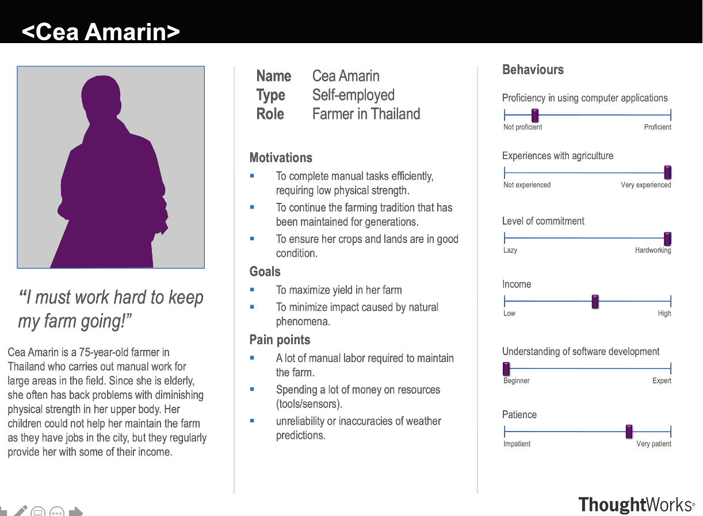
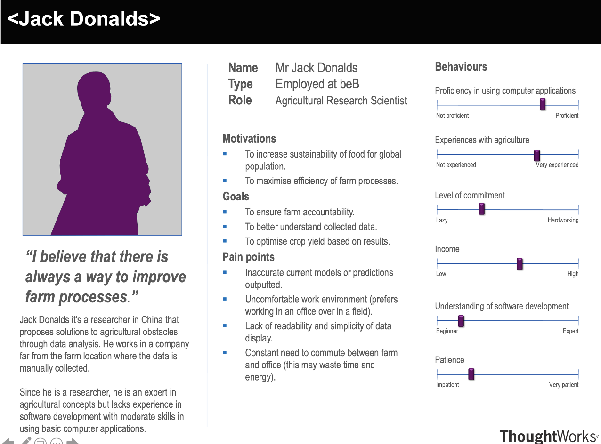
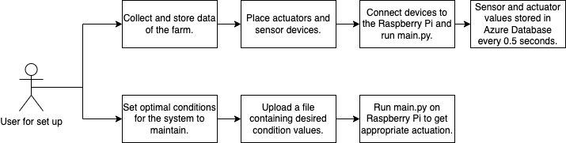
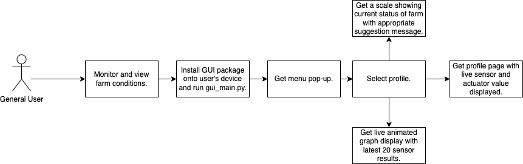

Client Introduction
Avanade is a company that provides IT services and innovative solutions, as well as the Cloud and AI analytics on Microsoft platforms.
Our client values “design-led approaches”, focusing more on goals and results rather than the process of using sensors and collecting data. We are encouraged to centre our research and design around future applications from small experiments to a larger industrial scale.
Project Goals:
- Create a solution that increases farm process efficiency.
- Incorporate IoT devices as well as the use of Azure cloud services.
- The solution could be anything as long as it addresses current problem and explores ways of using current technology resources available.
- Ensure the solution is extendable and scalable.
Requirement Gathering
Our team arranged weekly meetings with Avanade to discuss user requirements, and thus began the iterative process of gathering user needs and creating a product that could meet them[1].
Our client initially presented us with a very open-ended project: our solution could be anything of our interest, as long as it achieves the project goals listed above. Following the brainstorming technique from [2], we completed mind-maps and concept boards to explore different aspects of farming, such as livestock or agriculture to familiarise ourselves with the options we can explore. We thought about possible users that work with farms on a regular basis, such as farmers or researchers, and centred our design around their needs.
Along with users, we had to also consider the technology available to us. We were handed an AI camera and a Microsoft Raspberry Pi Grove Toolkit to explore the technology we can use for our solution. After discussing potential ideas, we decided on creating a control system for optimal plant growth with many sensors monitoring the condition, actuators for feedback response, and an AI camera to monitor the health of the plant.
In summary, we narrowed an open-ended task into a specific project by abstracting concepts we believe will create the most significant impact on the farming industry. After collecting data from users, as well researching about technology provided for us, we established and refined our requirements that could ensure project goals are met within the deadline.
Interviews, Personas and Scenarios
To get a deeper understanding on user needs, we have interviewed two possible users: a farmer and an agricultural researcher. Here is the script:
Farmer
Researcher
Personas and Scenarios
We decided on having the two personas: Farmer and Agricultural Research Scientist. This is because both have jobs that require information of farm processes and are interesting in optimising them. Farmer and Research Scientist also represent contrasting users as one would be more present on farm land whereas the other would monitor farm condition remotely.
Persona 1
Scenario 1
Cea is a 75-year-old farmer who is very experienced with agriculture. She wants to find a way to maintain the farm by herself, as she is elderly and finds herself lacking physical strength after working for a long time. She mounted our devices to the farm and logged into our web-app to monitor the situation of the field. Does this easily by seeing data and charts on the website. She also connects her original watering device into the system so she can finish her daily job at home on her own. She is also able to determine the situation by the color of the indicator light on the web-app and follows suggestions given which are determined by our model. This makes her work life more convenient and simpler.
Persona 2
Scenario 2
Jack Donalds is a 35-year-old agricultural research scientist and is quite experienced with using electronic devices and computer systems. He wants to collect some data on soil humidity and ambient temperature on the farm he is using as his case study. He accesses the farm's website on his computer, and briefly looks through all data shown on the first page to look for any anomalies. Satisfied that there aren't any error messages indicating problems, he selects an option to display ambient temperature against time on a graph. Satisfied with the data values, he downloads the data as an XML file and uses it for further analysis offline.
Use Case Diagrams
We have two use case diagrams: one to demonstrate what the user has to do to set up system (this may require more technical skills than an average user), and one for general use.

MoSCoW Requirements
Functional Requirements
| ID | Requirement Description | Type |
|---|---|---|
| 1 | Set up a circuit system with three plants in a plastic container with devices connected (raspberry pi, sensors and actuators). | Must have |
| 2 | Implement data collection for brightness and humidity subsystems. Get input from sensors in regular intervals and store them on the raspberry pi. | Must have |
| 3 | Add control to the system (simple PID control) for brightness and humidity subsystems. | Must have |
| 4 | Create a simple user interface that displays sensor readings and actuation status. | Must have |
| 5 | Create a cloud-based data collection and storage system using:
|
Should have |
| 6 | Allow the GUI to access the database and display data live. | Should have |
| 7 | Implement data collection for water and heating subsystems. | Should have |
| 8 | Add control to the system for water subsystem. | Should have |
| 9 | Create a desktop App with a GUI:
|
Should have |
| 10 | Perform data analysis on the sensor data:
|
Could have |
| 11 | Continue AI model training with the system we have. | Could have |
| 12 | Add AI camera to the system:
|
Could have |
| 13 | Perform data analysis on the camera data:
|
Could have |
| 14 | Allow the camera to classify plants and detect stress levels of plants:
|
Could have |
Non-functional Requirements
| ID | Requirement Description | Type |
|---|---|---|
| 15 | Create an easy-to-use GUI that allows users to view profiles for each subsystem separately. Ensure response time to interaction is minimal. | Must have |
| 16 | Ensure the system is scalable up to industry level: allowing up to thousands of sensor and actuator data to be collected by system and stored in database. | Must have |
| 17 | Ensure the actuation controlled by system is reliable and does not produce errors. | Must have |
| 18 | Ensure the system follows an extensible design, allowing new features to be easily added in the future. | Must have |
| 19 | Ensure security of cloud services. | Should have |
| 20 | Ensure the data stored on database is available if there is internet connection. | Should have |
| 21 | Ensure the delay time between data being saved in database and time of data collection is no more than 30 seconds. | Should have |
| 22 | Write comprehensive documentation for all code. | Could have |
| 23 | Create CI/CD workflow for the documentation:
|
Could have |
References
[1] J. S. H. &. R. Y. Preece, Interaction Design: Beyond Human-Computer Interaction Chapter 11 Pg 386, John Wiley, 2019.
[2] J. S. H. &. R. Y. Preece, Interaction Design: Beyond Human-Computer Interaction Chapter 11 Pg 402, John Wiley, 2019.